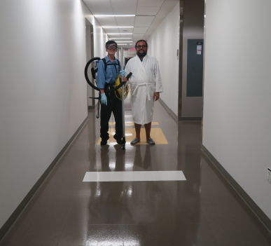
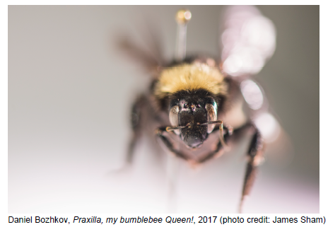

Biography
Daniel Bozhkov is an artist based in New York City, who employs a variety of media, from fresco to performance and video. He works with professionals from different fields, and enters the worlds of genetic science, department mega-stores, world-famous touristsites, as an amateur intruder/visitor who also functions as a producer of new strains of meaning into seemingly closed systems. Daniel Bozhkov is a recipient of 2012 Foundation for Contemporary Arts Grant, and 2007 Chuck Close Rome Prize of the American Academy in Rome. His work has been presented in international exhibitions such as the 6th Liverpool Biennial, in 2010, 6th Mercosul Biennial in Porto Alegre, Brazil in 2007, 9th Istanbul Biennale in Turkey in 2005, the 1st Moscow Biennial of Contemporary Art in Russia in 2005.
Projects
1. Hamilton Beach Lab Picnic (better seen through a telescope across the room)
Artists: Daniel Bozhkov
Dimensions: variable
Materials: Hamilton Beach sandwich makers, posters, paintings, telescope, instructions for use
Year: 2017
Description:
This project presents the original Hamilton Beach Sandwich Maker, designed to make a fast-food breakfast sandwich at home in five minutes, together with three proposals for alternative uses. The proposals were exchanged for artworks, also presented here.
Invisible ink low-temperature sensor
Concept by Tim Siegler, PhD candidate at Korgel Group Nano Materials Lab exchanged for a painting by Daniel Bozhkov that uses only the team colors of the Milwaukee Bucks.
Hamilton Beach Dosa Cooker
Concept by Vikas Reddy, PhD candidate at Korgel Group Nano Materials Lab exchanged for a portrait of himself painted by Daniel Bozhkov
Self-gliding doorstop (that keeps the lab door open for 10 minutes so that the sign about concealed weapons in the lab is invisible under certain conditions).
Concept by Daniel Bozhkov exchanged for a drawing of a tree on the corner of Speedway and 24th Street in Austin
2. The Institute for Higher Listening. Location 5 - Austin. Advanced Nanotechnology for Beginners
Artists: Daniel Bozhkov
Dimensions: variable
Materials: 4'x 10' banner, video, drawings, household items
Year: 2017
Description:
Daniel Bozhkov, with the help of fellow artists Marie Lorenz and Jeff Williams, built a loft and lived in the 'unused' top six feet of space in Dr. Brian Korgel's office on the sixth floor of the Norman Hackerman Building, the location for Korgel Group Nano Materials Lab, at UT. For the duration of the project, the artist and the scientist conducted a number of 30-minute sessions at which the scientist explained one advanced nanotechnology concept per session. The artist listened carefully, tried to understand to the best of his abilities, then rested, and responded at the level of his understanding, by interacting with different objects and spaces inside the building. The project includes household items used during Daniel Bozhkov's inhabitation, as well as drawings and a video of these interactions. Special thanks to Julia Cassel, who helped the artist create the movements captured in the video.

3. Brief Scenario for Disappearance
Artists: Daniel Bozhkov
Dimensions: variable
Materials: Video, Photograph
Year: 2017
Description:
Daniel Bozhkov's disembodied beard interviews Dr. Andrea Alu, Professor of Electrical and Computer Engineering at UT Austin, about invisibility and meta-materials. Dr. Alu has been exploring meta-materials that allow objects to become partially invisible, and more recently has focused his research on creating a circulator of acoustic waves that challenges the theoretical symmetry of physical laws under time reversal transformation. The photograph of a jewel scarab beetle, Chrysina gloriosa, reflecting Monet's Water Lilies at the Museum of Modern Art in New York, was taken during a discussion between Daniel Bozhkov and Parish Brady, a postdoctoral research fellow in the Department of Integrative Biology at UT about Brady's research on invisibility as related to circularly polarized light.
4. Praxilla, my bumblebee Queen!
Artists: Daniel Bozhkov
Dimensions: variable
Materials: Bumblebee queen, aerogel, glass enclosure, fresco, video, cupcakes, painkillers, dry pigment, plastic bag, used rubber gloves
Year: 2017
Description:
This is a mausoleum for a single bumblebee queen.
Praxilla is an American bumblebee, Bombus pensylvanicus, item #00146801 in the entomology collection of the University of Texas at Austin. She is named after Praxilla of Sicyon, a Greek lyric poet of 5th Century BCE, listed by Antipater of Thessalonica as the fist among nine 'immortal-tongued' women poets.
Praxilla is in a glass enclosure made by Adam Kennedy and Shallaco McDonald at the scientific glass laboratories of UT Chemistry Department. She is positioned next to a piece of aerogel, an extremely porous material, almost as light and airy as a piece of sky - consisting of 99.8% air. Aerogel was used by NASA in its Comet Sample Return Mission on the Stardust Spacecraft to capture interstellar dust and comet particles from Comet Wild 2.
Dr Shalene Jha, an evolutionary biologist at the Department of Integrated Biology of UT, studied Praxilla, and Alex Wild, a curator of the entomology collection took a close up photographic portrait of her. Recitation of the only surviving three-line fragment from Hymn to Adonis by Praxilla of Sicyon is lead by Evelyn Richardson, PhD candidate in Comparative Literature at the University of Chicago, echoed by Daniel Bozhkov, and interspersed with translations and commentaries of the poem by Stephen White, Professor of Classics and Philosophy at UT. The mausoleum includes fresco paintings, an empty plastic bag, 24 cupcakes in a container with painkillers and dry pigments, and disposable rubber gloves used by the installers of this exhibition.

The exhibition is now on at Visual arts centre in UT Austin. The exhibit closes on February 24th.Click here to have a look at the exhibition guide.